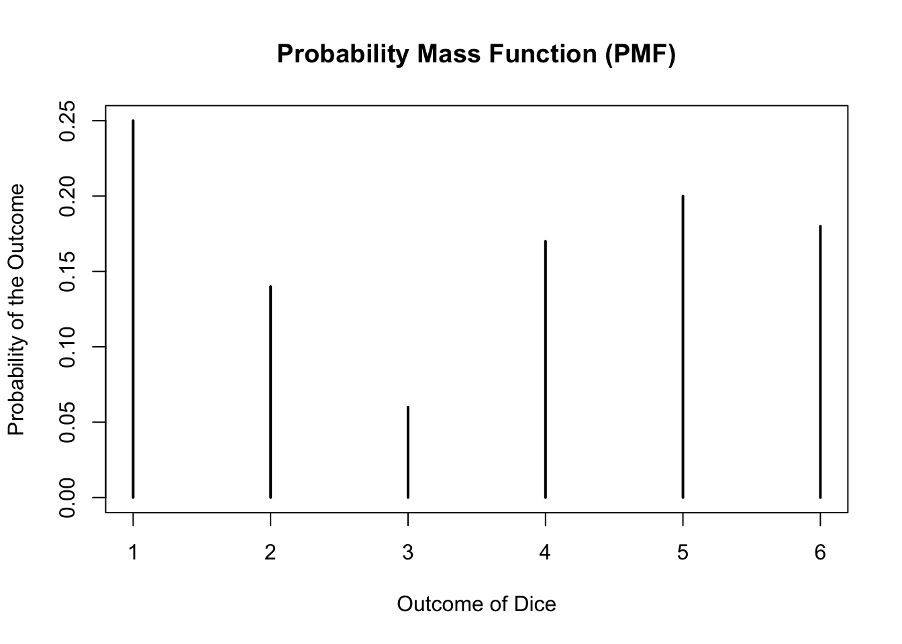
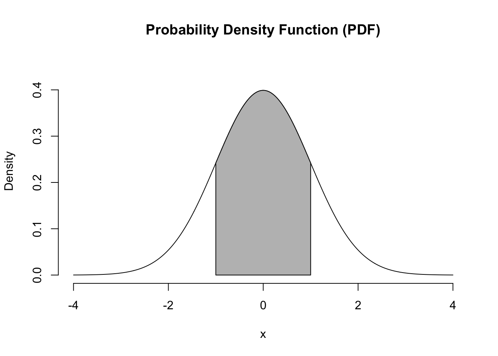
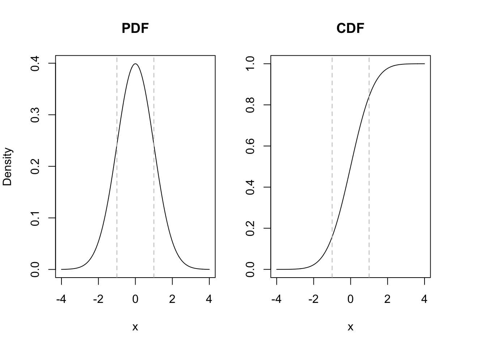

Explores the characteristics and properties of single-variable random distributions.
Author
Anthony Sung
Published
June 28, 2023
Random Variables
\(\textbf{Definition 1:}\) A random variable is a function \(X\) which assigns to each element \(s \in S\) one and only one number \(X(s) = x\), where \(x \in S_{x} \subseteq \mathbb{R}\), i.e., \[
X: S \longrightarrow S_{x} \subseteq \mathbb{R}
\] Random variables help us to view the collected data as an outcome of a random experiment, which is a procedure whose outcome is unknown to the experimenter before it takes place.
In practice, we often use \(\Omega_{X}\) to denote support, or say sample sample, of random variable \(X\). However, there are numerous notations to denote a support, e.g., \(\Omega, S, S_{X}, \operatorname{supp}(X)\).
Take throwing coins for example, if we only throw the coin for one time, then the sample space would be \(\{H, T\}\), where \(H\) represents head and \(T\) represents tail. If we throw the coin for two times, now the sample space would be \(\{HH, HT, TH, TT\}\).
Another example is tossing two dice. We toss two dice. In this case, the sample space is \[
\begin{aligned}
S = \{(1, 1), (1, 2), (1, 3), (1, 4), (1, 5), (1, 6),\\
(2, 1), (2, 2), (2, 3), (2, 4), (2, 5), (2, 6),\\
(3, 1), (3, 2), (3, 3), (3, 4), (3, 5), (3, 6),\\
(4, 1), (4, 2), (4, 3), (4, 4), (4, 5), (4, 6),\\
(5, 1), (5, 2), (5, 3), (5, 4), (5, 5), (5, 6),\\
(6, 1), (6, 2), (6, 3), (6, 4), (6, 5), (6, 6)\}
\end{aligned}
\]
One may define the random variable X as the sum: \[
S_{X} = \{2, 3, 4, 5, 6, 7, 8, 9, 10, 11, 12\}.
\] or let the random variable \(Y\) be the product: \[
S_{Y} = \{1, 2, 3, 4, 5, 6, 8, 9, 10, 12, 15, 16, 18, 20, 24, 25, 30, 36\}.
\]
We can use Monte Carlo experiment to simlulate the process and result of tossing a dice.
# d for diced <-sample(1:6, size =100, replace =TRUE)d
Using table function we can see the probabilty of each outcome when tossing a dice.
table(d) /100
d
1 2 3 4 5 6
0.25 0.14 0.06 0.17 0.20 0.18
plot(table(d) /100,xlab ="Outcome of Dice",ylab ="Probability of the Outcome")# Add a titletitle("Probability Mass Function (PMF)")

If we toss it for 1000000 times, then we will find that the probability of each outcome would be very close to \(1/6 \approx 0.166667\), which yields a conclusion that given a larger the sample size, the closer the relative frequencies to the probabilities would be.
d <-sample(1:6, size =1000000, replace =TRUE)table(d) /1000000
Note that we can use the support of to categorize random variable. For a discrete random variable, its support must be a discrete set, while for a continuous random variable, its support is an interval of values.
Discrete Random Variables
\(\textbf{Definition 2:}\) If a random variable \(X\) has a discrete distribution with \(\operatorname{supp}(X) \in \mathbb{R}\), and define a function \(f(x): \mathbb{R} \mapsto [0,1]\) to be \[
f(x) =
\begin{cases}
\mathbb{P}(X = x),& \quad x \in \operatorname{supp}(X)\\
0,& \quad x \notin \operatorname{supp}(X)
\end{cases}
\] which satisfies:
\(f(x) > 0, \forall x \in \operatorname{supp}(X)\)
\(\sum_{x \in \operatorname{supp}(X)} f(x) = 1\)
\(\mathbb{P}(X \in A) = \sum_{x \in A}f(x)\), where \(A \in \operatorname{supp}(X)\)
then we say \(f(x)\) is a probability mass function (PMF).
\(\textbf{Definition 3:}\) We say a function \(F(x)\) is a cumulative distribution function (CDF) if for any \(x \in \mathbb{R}\), \(F(x): \mathbb{R} \mapsto [0, 1]\), which satisfies \[
F(x) = \mathbb{P}(X \leq x) = \sum_{x_{i} \in x}f(x)
\] Here are some properties of discrete cumulative distribution function:
\(\mathbb{P}(X > a) = 1 - \mathbb{P}(X \leq a) = 1 - F(a)\)
\(\mathbb{P}(X \geq a) = \mathbb{P}(X = a) + \mathbb{P}(X > a) = f(a) + 1 - F(a) = [1 - F(a)] + f(a)\)
\(\mathbb{P}(a < X \leq b) = F(b) - F(a)\)
\(\mathbb{P}(a < X < b) = F(b) - F(a) - f(b)\)
\(\mathbb{P}(a \leq X \leq b) = F(b) - F(a) + f(a)\)
\(\mathbb{P}(a \leq X < b) = F(b) - F(a) + f(a) - f(b)\)
\(\textbf{Definition 4:}\) For a continuous random variable \(X\), if \(f(x): \mathbb{R} \mapsto \mathbb{R}\) and for any real number \(a \leq b\) satisfy \[
\mathbb{P}(a < X \leq b) = \int^{b}_{a}f(x) dx = F(x)\Big|^{b}_{a} = F(b) - F(a)
\] and
then we say \(f(x)\) is a probability density function (PDF) of \(X\).
# Generate x values for the range of interestx <-seq(-4, 4, 0.01)# Compute corresponding y values using the standard normal density functiony <-dnorm(x, mean =0, sd =1)# Create a blank plot with the desired x-axis limits and y-axis labelsplot(x, y, type ="l", xlab ="x", ylab ="Density", xlim =c(-4, 4), ylim =c(0, 0.45), axes = F)# Fill the region between -1 and 1 with gray colorpolygon(c(-1, x[x >=-1& x <=1], 1), c(0, y[x >=-1& x <=1], 0), col ="gray")axis(1)axis(2)# Add a titletitle("Probability Density Function (PDF)")

Note that there is a corr
# Generate x values for the range of interestx <-seq(-4, 4, 0.01)# Compute corresponding y values for PDF and CDFPDF <-dnorm(x, mean =0, sd =1)CDF <-pnorm(x, mean =0, sd =1)# Set up a layout with two plots side by sidelayout(matrix(c(1, 2), nrow =1, ncol =2), widths =c(0.5, 0.5))# Plot PDF on the leftpar(mar =c(5, 4, 4, 2))plot(x, PDF, type ="l", xlab ="x", ylab ="Density", main ="PDF")abline(v =c(-1, 1), lty =2, col ="gray") # Add vertical lines at -1 and 1# Plot CDF on the rightpar(mar =c(5, 2, 4, 4))plot(x, CDF, type ="l", xlab ="x", ylab ="Probability", main ="CDF")abline(v =c(-1, 1), lty =2, col ="gray") # Add vertical lines at -1 and 1

Mathematically, by using the fundamental theorem of calculus, we can find the relationship. Given a well-defined random variable \(X\). Write its CDF as \(F(x)\) and its PDF as \(f(x)\), Since \[
\int^{b}_{a} f(x) dx = F(x) \Big|^{b}_{a}
\] then \[
f(x) = \frac{\partial F(x)}{\partial x}, \quad F(x) = \int^{x}_{-\infty}f(u)du.
\] Now we will discuss some properties of CDF given continuous random variable. Suppose \(X\) is a continuous random variable, and \(\operatorname{supp}(X) = \{x| -\infty < x < \infty\} = \{x | x \in \mathbb{R}\}\). Then
In this section, we will talk about moment of random variables. Learning about moments of random variables is valuable for two main reasons:
Characterizing Distributions: Moments provide a way to quantitatively describe the properties of probability distributions. They capture essential features such as the central tendency, variability, skewness, and kurtosis of a random variable’s distribution. Understanding moments allows us to compare and contrast different distributions and gain insights into their shapes and characteristics.
Statistical Analysis: Moments play a crucial role in statistical analysis. They provide important summary statistics that can be used for inference, hypothesis testing, and parameter estimation. Moments can help estimate population parameters, assess the goodness of fit, and determine the stability and convergence of statistical models.
Important Moments in Statistical Analysis
\(\textbf{Theorem 1:}\) Let \(X\) be a random variable and let \(Y = g(X)\) be a function of this random variable.
If \(X\) is a discrete random variable, then \[
\mathbb{E}[g(X)] = \sum_{x}g(x)f(x)
\]
If \(X\) is a continuous random variable, then \[
\mathbb{E}[g(X)] = \int_{x}g(x)f(x)dx
\] Note that \(\mathbb{E}[g(X) + h(X)] = \mathbb{E}[g(X)] + \mathbb{E}[h(X)]\).
\(\textbf{Definition 5:}\) The expected value or expectation of a discrete random variable is denoted as \(\mu = \mathbb{E}(X)\) and is calculated by summing the product of each possible value \(x\) of the variable and its corresponding probability \(f(x)\): \[
\mu = \mathbb{E}(X) = \sum_{x}xf(x),
\] For continuous random variables, the expected value \(\mu = \mathbb{E}(X)\) is obtained through integration. It involves multiplying each value \(x\) of the variable by its probability density function \(f(x)\) and integrating over the entire range of possible values:
\[
\mu = \mathbb{E}(X) = \int_{x}xf(x)dx.
\]
\(\textbf{Definition 6:}\) The variance of a random variable measures the average squared deviation from its expected value. For a discrete random variable \(X\), the variance is defined as:
Similarly, for a continuous random variable \(X\), the variance is defined as:
\[
\operatorname{var}(X) = \mathbb{E}\left[(X-\mu)^2\right] = \int_{x}\left[(X-\mathbb{E}(X)\right]^2f(x)dx,
\] We often use the following way to calculate the variance.
Notice that the expectation or variance may not exist. For example (Linton, 2017), let \(X\) be a random variable whose PMF is defined as \[
f(x) =
\begin{cases}
\frac{1}{2|x|(|x|+1)}, \; & \text{if } x = \pm 1, \pm 2, \pm 3, \cdots\\
0, \; & \text{otherwise}.
\end{cases}
\] Then we have \[
\sum_{x=-1}^{-\infty}\frac{1}{2|x|(|x|+1)} = -\infty \;\text{ and } \; \sum_{x=1}^{\infty}\frac{1}{2|x|(|x|+1)} = \infty,
\] hence \(\mathbb{E}(X)\) does not exist. In terms of the existence of variance, let’s consider a random variable \(X\) defined as follows: \[
X = \begin{cases}
1, & p= \frac{1}{2}, \\
-1, & p= \frac{1}{2}.
\end{cases}
\]
To calculate the variance, we need to determine the expected value \(\mathbb{E}(X)\). However, in this case, the expected value does not exist because the random variable \(X\) does not have a well-defined mean.
The variance is given by \(\operatorname{var}(X) = \mathbb{E}[(X-\mu)^2]\), where \(\mu = \mathbb{E}(X)\). Since \(\mathbb{E}(X)\) is undefined for this random variable, the variance does not exist.
Let’s discuss the properties of the expectations and variances.
\(\textbf{Theorem 2:}\) Let \(c\) be a constant, then
\[
\begin{aligned}
\mathbb{E}(aX + b) &= \sum_{x}(ax+b)f(x) = \sum_{x}af(x) + \sum_{x} b f(x)\\
&= a \underbrace{\sum_{x}xf(x)}_{=\mu} + b \underbrace{\sum_{x}f(x)}_{=1}= a\mathbb{E}(X) + b
\end{aligned}
\] Indeed, we can see \(aX + b\) as a function of \(X\), and use \(\textbf{Theorem 1}\) to prove.
\[
\begin{aligned}
\mathbb{E}[(X - c)^2] &= \mathbb{E}[(X - \mu + \mu - c)^2] \\
&= \mathbb{E}[(X - \mu)^2 + (\mu - c)^2 + 2(X - \mu)(\mu - c)]\\
&= \underbrace{\mathbb{E}[(X - \mu)^2]}_{= \operatorname{var}(X)} + \underbrace{\mathbb{E}[(\mu - c)^2]}_{(\mu - c)^2} + 2 \underbrace{\mathbb{E}[(X - \mu)(\mu - c)]}_{= 0}\\
&=\operatorname{var}(X) + (\mu - c)^2
\end{aligned}
\] Now let \(Q = (\mu - c)^2\) be a target function, by first order condition, we have \[
\frac{\partial Q}{\partial c} = - 2(\mu - c) \overset{*}{=}0 \Rightarrow c = \mu = \mathbb{E}(X) 1
\]
Moment Generating Function (MGF)
The moment generating function (MGF) is a powerful tool in probability theory and statistics that provides a way to uniquely characterize the probability distribution of a random variable. The MGF allows us to derive moments of a random variable and provides a convenient method for analyzing its properties.
\(\textbf{Definition 7:}\) If \(X\) is a discrete/continuous with pmd/pdf \(f(x)\). Given \(h > 0\) and \(t \in (-h, h)\), if \[
M_{X}(t) = \mathbb{E}(e^{tX}) =
\begin{cases}
\sum_{x}e^{tx}f(x) = \sum_{x}e^{tx}\mathbb{P}(X = x) \qquad &\text{(discrete)}\\
\int_{x}e^{tx}f(x)dx \qquad &\text{(continuous)}
\end{cases}
\] and \(M_{X}(t)\) exists and is finite, then we say \(M_{X}(t)\) a moment generating function. Note that there are two main functions of MGF:
Moments: By taking derivatives of the MGF with respect to \(t\), we can obtain the moments of the random variable. Specifically, the \(n\)-th derivative of the MGF evaluated at \(t=0\) gives the \(n\)-th moment of \(X\).
Uniqueness: If two random variables have the same MGF within a certain range of \(t\), they have the same probability distribution. This property allows us to identify and compare probability distributions based on their MGFs.
To prove the relationship \(\mathbb{E}(X^{k}) = M_{X}^{(k)}(t)\Big|_{t = 0}\), we need to use the Taylor series expansion of the moment-generating function (MGF) \(M_{X}(t)\).
Since the Maclaurin series of \(e^{y}\) at \(y = 0\) is \[
e^{y} = 1 + y + \frac{y^2}{2!} + \frac{y^3}{3!} + \cdots
\] Let \(y = tX\), we have \[
e^{tX} = 1 + tX + \frac{(tX)^2}{2!} + \frac{(tX)^3}{3!} + \cdots
\] Take expected value of both sides, we obtain \[
\mathbb{E}(e^{tX}) = \Big[1 + tX + \frac{(tX)^2}{2!} + \frac{(tX)^3}{3!} + \cdots\Big] = 1 + t\mathbb{E}(X)+ \frac{t^2}{2!}\mathbb{E}(X^2) + \frac{t^3}{3!}\mathbb{E}(X^3) + \cdots
\] By taking the \(k\)-th derivative with respect to \(t\) on both sides of the equation, we obtain \[
M_{X}^{(k)}(t) = \mathbb{E}(X^{k}) + t\mathbb{E}(X^{k+1}) + \frac{t^2}{2!}\mathbb{E}(X^{k+2}) + \cdots
\] We substitute \(t = 0\) into the equation we get \(\mathbb{E}(X^{k})\).
\(\textbf{Theorem 3:}\) Given the MGF of \(X\) is \(M_{X}(t)\). Suppose \(Y = aX + b\), then \[
M_{Y}(t) = M_{aX + b}(t) = e^{bt}M_{X}(at)
\]\(\textit{proof }\)\[
\begin{aligned}
M_{Y}(t) &= \mathbb{E}(e^{tY}) = \mathbb{E}[e^{t(aX + b)}]\\
&= \mathbb{E}(e^{bt}e^{atX}) = e^{bt}\mathbb{E}[e^{(at)X}] = e^{bt}M_{X}(at)
\end{aligned}
\]\(\textbf{Theorem 4:}\) Suppose that \(X_{1},\cdots, X_{n}\) are \(n\) independent random variables; and for \(i = 1, \cdots , n\), let \(\psi_{i}\) denote the MGF of \(X_{i}\). Let \(Y = X_{1} + \cdots + X_{n}\), and let the MGF of \(Y\) be denoted by \(\psi\). Then for every value of \(t\) such that \(\psi_{i}(t)\) is finite for \(i = 1, \cdots , n\), \[
\psi(t) = \prod^{n}_{i=1}\psi_{i}(t).
\]\(\textit{proof }\) By definition, \[
\psi(t) = \mathbb{E}(e^{tY}) = \mathbb{E}[e^{t(X_{1} + \cdots + X_{n})}] = \mathbb{E}\left(\prod^{n}_{i=1}e^{tX_{i}}\right)
\] Since the random variables \(X_{1},\cdots, X_{n}\) are independent, \[
\mathbb{E}\left(\prod^{n}_{i=1}e^{tX_{i}}\right) = \prod^{n}_{i=1}\mathbb{E}(e^{tX_{i}})
\] Hence, \[
\psi(t) = \prod^{n}_{i=1}\psi_{i}(t).
\] ## Transformation of Random Variables
First, we will discuss discrete random variable.
\(\textbf{Property 3:}\) Given a discrete random variable \(X\) with PMF \(f(x)\). If \(Y = g(X)\), then \[
f_{Y}(y) = \mathbb{P}(Y = y) = \mathbb{P}[g(X) = y] = \sum_{\{x|g(x) = y\}}f_{X}(x)
\] For example, suppose a random variable with PMF: \[
f(x) =
\begin{cases}
\frac{1}{2}, \;&x = 0\\
\frac{1}{4}, \;&x = 1\\
\frac{1}{8}, \;&x = 2\\
\frac{1}{8}, \;&x = 3\\
0,\;&\text{otherwise.}
\end{cases}
\] Let \(Y = (X+1)^2\). Then the PMF of \(Y\) is \[
f(y) =
\begin{cases}
\frac{1}{2}, \;&y = 1\\
\frac{1}{4}, \;&y = 4\\
\frac{1}{8}, \;&y = 9\\
\frac{1}{8}, \;&y = 16\\
0,\;&\text{otherwise.}
\end{cases}
\] Therefore, \[
\begin{aligned}
\mathbb{E}(Y) &= \sum_{Y}y f(y) = \frac{37}{8}\\
\mathbb{E}(Y^2) &= \sum_{Y}y^2 f(y) = \frac{373}{8}\\
\operatorname{var}(Y) &= \mathbb{E}(Y^2) - [\mathbb{E}(Y)]^2 = \frac{1615}{64}
\end{aligned}
\]
Now we will discuss continuous random variable.
\(\textbf{Property 4:}\) If the PDF of \(X\) is \(f_{X}(x)\), and \(Y = g(X)\) is an injective function under \(\operatorname{supp}(X)\), i.e., \(g'(x) \neq, \forall x\), then \(X = g^{-1}(Y)\). Let the PDF of \(Y\) be \(f_{Y}(y)\), then \[
f_{Y}(y) = f_{X}[g^{-1}(y)]\Bigg|\frac{\partial g^{-1}(y)}{\partial y}\Bigg|,
\]
where \(\Bigg|\frac{\partial g^{-1}(y)}{\partial y}\Bigg|\) can be abbreviated as \(|J|\), called the Jacobian.
\(\textit{proof }\)
In the following proof, we will discuss by two cases.
Suppose \(g(\cdot)\) is a strict increasing function. Let \(w(x) = g^{-1}(x)\), then \(g'(x) > 0\) and \(w'(x) > 0\). Also \(g(x) \leq y\) must imply \(x \leq g^{-1}(y)\).
By the definition of CDF, we have \[
F_{Y}(y) = \mathbb{P}(Y \leq y) = \mathbb{P}[g(X) \leq y] = \mathbb{P}[X \leq g^{-1}(y)] = F_{X}[g^{-1}(y)]
\] Take the derivative of the CDF, then we can obatin the PDF: \[
\begin{aligned}
f_{Y}(y) &= \frac{\partial F_{Y}(y)}{\partial y} = F'_{X}[g^{-1}(y)]\frac{\partial g^{-1}(y)}{\partial y}\\
&= f_{X}[g^{-1}(y)] \times \bigg[\frac{\partial g^{-1}(y)}{\partial y}\bigg] = f_{X}[g^{-1}(y)] \times \Bigg|\frac{\partial g^{-1}(y)}{\partial y}\Bigg|
\end{aligned}
\] 2. Suppose \(g(\cdot)\) is a strict decreasing function. Let \(w(x) = g^{-1}(x)\), then \(g'(x) < 0\) and \(w'(x) < 0\). Also \(g(x) \leq y\) must imply \(x \geq g^{-1}(y)\).
By the definition of CDF, we have \[
F_{Y}(y) = \mathbb{P}(Y \leq y) = \mathbb{P}[g(X) \leq y] = \mathbb{P}[X \geq g^{-1}(y)] = 1 - F_{X}[g^{-1}(y)]
\] Take the derivative of the CDF, then we can obatin the PDF: \[
\begin{aligned}
f_{Y}(y) &= \frac{\partial F_{Y}(y)}{\partial y} = -F'_{X}[g^{-1}(y)]\frac{\partial g^{-1}(y)}{\partial y}\\
&= f_{X}[g^{-1}(y)] \times \bigg[-\frac{\partial g^{-1}(y)}{\partial y}\bigg] = f_{X}[g^{-1}(y)] \times \Bigg|\frac{\partial g^{-1}(y)}{\partial y}\Bigg|
\end{aligned}
\]